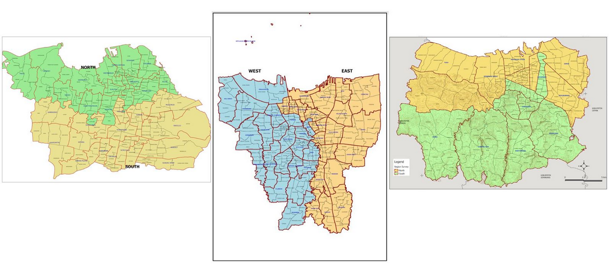
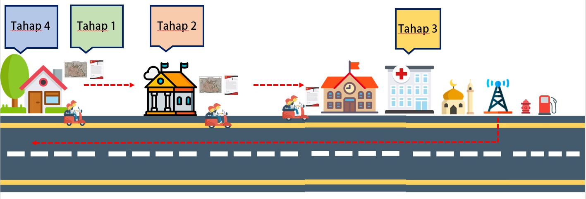
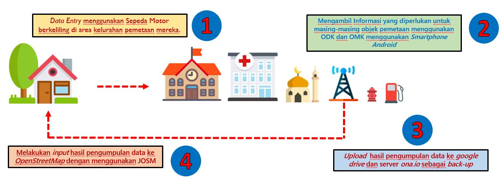
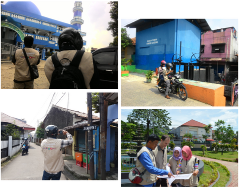
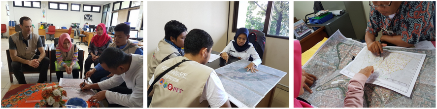
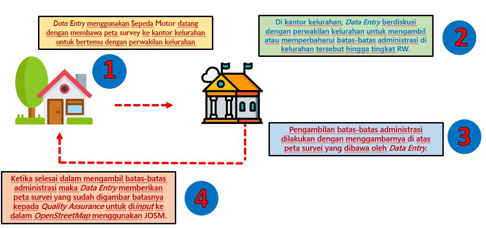

Metodologi Pengumpulan Data
Tujuan Pembelajaran:
- Memahami persiapan pengumpulan data
- Mengetahui alur kerja dalam pengumpulan data
- Mengetahui peralatan yang digunakan dalam pengumpulan data
- Mengetahui cara mengambil data di lapangan
Melakukan pengumpulan data atau yang disebut survei lapangan merupakan sesuatu penting khususnya dalam kegiatan pemetaan. Dalam melakukan pemetaan khususnya dalam konteks kebencanaan pengumpulan informasi adalah hal yang tidak dapat diabaikan. Meskipun saat ini perkembangan teknologi sudah dapat membantu Anda dalam melakukan pemetaan jarak jauh akan tetapi tidak semua informasi dapat dikumpulkan hanya dengan mengandalkan citra satelit atau foto udara. Oleh karena itu, survei lapangan di area pemetaan menjadi satu-satunya pilihan yang dapat Anda lakukan.
Dalam melakukan kegiatan pengumpulan data di lapangan, Anda perlu mengetahui cara serta metodologi yang tepat untuk melakukannya. Hal ini menjadi penting agar nantinya kegiatan pengumpulan data dapat dilaksanakan secara efisien, efektif dan tepat sasaran. Selain itu, pengumpulan data yang baik akan menghasilkan hasil pemetaan yang baik dari sisi kuantitas dan kualitas. Dalam modul ini Anda akan mempelajari metodologi serta tahapan-tahapan yang dilakukan dalam melakukan pemetaan khususnya di kegiatan HOT-PDC InAWARE.
I. Persiapan Pengumpulan Data
Dalam melaksanakan kegiatan pemetaan HOT-PDC InAWARE, Humanitarian OpenStreetMap Team (HOT) Indonesia membuat perencanaan yang terorganisir. Hal ini dimaksudkan agar kegiatan pemetaan yang dilaksanakan di masing-masing kota dapat dilaksanakan secara efektif dan efisien serta tetap menjaga kualitas dari data yang dikumpulkan. Terdapat beberapa kegiatan persiapan yang perlu dilakukan sebelum melakukan pengumpulan data di lapangan seperti:
- Pembagian Wilayah Survei dan Tim Survei
Pembagian wilayah pemetaan ini bertujuan untuk memfokuskan area kegiatan pemetaan dimana masing-masing team akan bertanggung jawab untuk wilayahnya tertentu seperti yang nanti akan dijelaskan lebih lanjut di Modul Metodologi Survei untuk OpenStreetMap bahwa terdapat 2 (dua) Mapping Supervisor sehingga dengan dibaginya wilayah pemetaan maka tim survei akan dapat fokus dan bertanggung jawab untuk wilayahnya masing-masing. Kemudian untuk pembagian tim survei harus melihat aspek kemampuan teknis maupun pengetahuan lokal dari wilayah yang akan disurvei.
Pentingnya kemampuan teknis dalam mengoperasikan peralatan survei akan membantu dalam pengambilan data di lapangan. Pengetahuan lokal seperti pemahaman akan lokasi yang akan menjadi tujuan survei dan kemampuan berbahasa daerah (lokal) menjadi nilai tambah yang dapat membantu mendapatkan informasi dari masyarakat dan komunitas di area survei.

- Mengurus Surat Izin Survei
Dalam kegiatan yang melibatkan berbagai pihak dan memiliki area pemetaan yang luas dan dilaksanakan dalam waktu yang relatif lama, surat izin survei merupakan hal yang sangat penting untuk dimiliki sebelum memulai melakukan pemetaan. Dengan memiliki surat izin survei yang dikeluarkan oleh pemerintah lokal atau dalam hal ini Badan Penanggulangan Bencana Daerah (BPBD) di masing-masing kota, kegiatan survei akan relatif lebih dipercaya oleh masyarakat di area survei. Selain itu, Anda juga akan lebih mudah untuk mendapatkan informasi dari kelurahan dan masyarakat setempat karena sudah memiliki tujuan yang jelas dalam melakukan kegiatan survei pemetaan di wilayah mereka. Surat izin survei sebaiknya dikeluarkan oleh instansi / organisasi lokal yang bekerja sama dengan tim survei dalam melakukan kegiatan pemetaan.
- Mengetahui Prioritas Objek Pemetaan
Sebelum memulai kegiatan survei ada baiknya Anda melakukan komunikasi dengan pemerintah lokal atau BPBD untuk membahas objek-objek yang menjadi prioritas dalam kegiatan pemetaan ini. Masing-masing kota dapat berbeda satu dengan yang lain dalam aspek keragaman bentuk wilayah, jenis bencana, dan aspek sosial. Aspek-aspek tersebut dapat menjadi pertimbangan dalam menentukan objek-objek yang menjadi prioritas dalam kegiatan pengumpulan data di lapangan. Sebagai contoh objek prioritas fasilitas tempat ibadah umat muslim di DKI Jakarta hanya masjid, tetapi di Kota Semarang musala juga menjadi objek prioritas untuk dikumpulkan. Menurut BPBD DKI Jakarta, jika terjadi bencana seperti banjir maka potensi tempat pengungsian hanya dapat dilaksanakan di masjid karena kapasitas tampungan mereka yang relatif besar, sedangkan di Semarang menurut BPBD Kota Semarang lebih sering terjadi bencana skala kecil/lokal seperti longsor sehingga tidak memerlukan tempat pengungsian dan musala dapat dijadikan tempat mengungsi. Oleh karena itu, jumlah pengungsi tidak banyak sehingga diarahkan ke musala-musala terdekat dari wilayah terdampak.
Tujuan mengetahui prioritas objek pemetaan yang sesuai dengan kebutuhan pemerintah lokal adalah agar hasil dari kegiatan pemetaan dapat digunakan oleh pemerintah, komunitas, dan masyarakat lokal, tidak hanya HOT. Dimana hasil kegiatan pemetaan dapat disesuaikan dengan kebutuhan mereka.
- Melakukan Pelatihan Tim Pemetaan dan Mapathon
Hal ini merupakan persiapan untuk internal tim dimana para Quality Assurance dan Data Entry diajarkan hal-hal teknis yang akan mereka lakukan sepanjang kegiatan pemetaan berlangsung seperti menggunakan aplikasi di smartphone yang akan digunakan saat survei, menggunakan peta survei, mengirim data-data hasil survei ke server, melakukan input hasil pengumpulan data dengan JOSM, melakukan validasi hasil input data, dan lain-lain. Kegiatan ini sangat penting karena dapat membantu kegiatan pemetaan supaya tidak terhambat dan lebih maksimal. Selain itu, persiapan dalam pelaksanaan mapathon sebagai kegiatan pemetaan jarak jauh (mapathon) bersama dengan universitas lokal dapat membantu untuk melengkapi data bangunan dan jalan di area pemetaan sebelum melakukan pengumpulan data di lapangan.
II. Alur Pengumpulan Data
Kegiatan pengumpulan data dimulai tidak hanya ketika berada di wilayah survei atau lapangan, akan tetapi dimulai dari basecamp hingga kembali ke basecamp sebelum melakukan input data hasil survei. Berikut alur kegiatan dalam melakukan pengumpulan data di lapangan:

- Tahap 1
Masing-masing tim survei yang terdiri dari 2 (dua) Data Entry mengendarai sepeda motor dan membawa Surat Izin Survei yang dibuat oleh organisasi lokal atau instansi seperti Badan Penanggulangan Bencana Daerah (BPBD) dan Peta Survei. Tujuan pertama adalah menuju kantor kelurahan di area survei mereka.
- Tahap 2
Pemberhentian pertama adalah kantor kelurahan di area survei masing-masing tim survei. Kemudian mereka bertemu dengan perwakilan kelurahan untuk meminta izin melakukan survei dengan berkeliling di wilayah kelurahan tersebut selama beberapa hari dan untuk berdiskusi dalam rangka membarui batas administrasi di kelurahan tersebut hingga batas rukun warga (RW).
- Tahap 3
Setelah membarui batas administrasi di kelurahan tersebut, tim data entry (DE) melanjutkan kegiatan untuk melakukan survei terhadap semua fasilitas umum dan objek prioritas di kelurahan tersebut. Mereka menggunakan aplikasi smartphone untuk mengumpulkan seluruh informasi objek-objek yang ada di kelurahan tersebut. Kegiatan tahap 3 ini dapat berlangsung selama 2-4 hari untuk satu kelurahan.
- Tahap 4
Setelah survey, tim survei meng-upload hasil pengumpulan data mereka ke server (ona.io) kemudian kembali ke kantor untuk melakukan input semua hasil pengumpulan data di lapangan menggunakan JOSM dan upload seluruh hasil survei ke OpenStreetMap.
Tahap selanjutnya adalah Quality Assurance (QA) men-download data-data tersebut dan memeriksa kualitas bentuk objek dan informasinya (tag). Setelah itu, tim Mapping Supervisor akan memeriksa kembali data yang sudah divalidasi oleh tim Quality Assurance, sehingga kualitas data yang dihasilkan semakin baik sebelum di-upload ke OpenStreetMap. Materi terkait penjaminan kualitas data OpenStreetMap akan dibahas pada modul-modul yang berbeda.
III. Perlengkapan Pengumpulan Data
Dalam melakukan pengumpulan data di lapangan, tim survei perlu mengetahui perlengkapan apa saja yang dibutuhkan untuk dibawa ke wilayah pemetaan mereka. Hal ini menjadi penting karena ketersediaan dan kelengkapan peralatan menjadi salah satu faktor yang mendukung performa dari tim survei di lapangan. Berikut adalah beberapa perlengkapan yang dibutuhkan dalam melakukan pengumpulan data di lapangan:
- Smartphone
Ini merupakan alat yang paling penting dalam melakukan pengumpulan data di lapangan. Dalam memilih smartphone yang akan digunakan perlu diperhatikan spesifikasi tertentu dari smartphone tersebut seperti kapasitas memori penyimpanan, RAM yang dimiliki serta ketersediaan fitur GPS/lokasi di GPS tersebut dan sistem operasi yang digunakan harus menggunakan sistem operasi Android karena aplikasi yang akan diinstal dan digunakan hanya tersedia di Android. Adapun aplikasi yang dibutuhkan dalam melakukan pengumpulan lapangan adalah OpenMapKit, ODK Collect , dan OSM Tracker.
- Power Bank
Alat ini juga menjadi penting untuk dibawa ketika melakukan pengumpulan data di lapangan. Ketika melakukan pengumpulan data, tim survei akan selalu mengaktifkan fitur lokasi GPS serta koneksi internet di Smartphone mereka dalam melakukan pengumpulan data sehingga daya baterai dari Smartphone dapat berkurang secara cepat. Oleh karena itu, power bank menjadi alat bantu yang dapat memastikan smartphone dari Data Entry tetap bisa digunakan selama kegiatan pengumpulan data berlangsung.
- Alat Tulis
Alat tulis menjadi perlengkapan yang penting dalam mencatat informasi yang didapatkan di lapangan. Selain itu, alat tulis digunakan untuk menggambarkan batas-batas administrasi di peta survei yang dibawa oleh Data Entry ke kantor kelurahan. Beberapa contoh alat tulis yang dapat dibawa adalah spidol warna, penggaris dan buku catatan.
- Peta Survei
Peta survei dibawa untuk mempermudah mengidentifikasi wilayah area yang akan disurvei. Selain itu, peta survei akan dijadikan sebagai alat bantu dalam membarui batas-batas administrasi kelurahan yang disurvei. Pembuatan peta survei lebih lengkapnya akan dibahas dalam Modul Pembuatan Peta Survei dengan QGIS.
- Surat Izin Survei
Seperti yang sudah dijelaskan sebelumnya bahwa surat izin survei merupakan hal yang harus dibawa oleh Data Entry saat melakukan pengumpulan data di lapangan. Surat izin survei biasanya dikeluarkan oleh organisasi lokal atau instansi lokal seperti BPBD sehingga akan memudahkan komunikasi oleh masyarakat setempat dalam mendapatkan informasi terkait objek-objek yang akan dipetakan.
- GPS
GPS adalah alat yang dapat dijadikan alternatif jika smartphone yang digunakan sedang mengalami masalah. Selain itu, GPS juga digunakan sebagai alat bantu validasi untuk melakukan pengecekan kembali hasil pengumpulan data di lapangan.
IV. Pengumpulan Data di Lapangan
a. Pengumpulan Data Infrastruktur
Dalam melakukan pengumpulan data infrastruktur data entry harus menggunakan smartphone android yang telah memiliki beberapa aplikasi yang telah diinstal yaitu:
- ODK Collect
Ini merupakan aplikasi yang berfungsi untuk mengumpulkan informasi-informasi terkait objek yang Anda petakan. Dengan menggunakan aplikasi ini Anda tidak perlu untuk mencetak puluhan hingga ratusan formulir survei. Selain itu aplikasi ini memungkinkan Anda untuk mengambil foto serta koordinat lokasi dari objek yang Anda petakan.
- OpenMapKit (OMK)
OMK merupakan aplikasi tambahan untuk ODK Collect dimana Anda dapat langsungmemberikan informasi yang Anda kumpulkan di lapangan sesuai dengan tag yang ada di OpenStreetMap. Selain itu, dengan OpenMapKit kita bisa menambahkan informasi yang sesuai dengan atribut (tag) OSM pada data OSM yang sebelumnya telah Anda download. Tidak hanya itu, OMK juga memberikan kemudahan untuk menambahkan data berupa titik sesuai dengan lokasi yang disajikan pada peta yang ada di OMK. Semua informasi yang Anda masukkan melalui OMK akan disimpan kembali pada ODK Collect, yang kemudian akan dikirim ke server ona.io atau server lain yang digunakan.
- OSMTracker
Aplikasi ini membantu Data Entry dalam mencatat cakupan survei di kelurahan target pemetaan mereka. OSM Tracker memiliki fungsi yang sama seperti GPS dimana Anda bisa merekam jejak perjalanan survei kemudian menampilkannya dalam dengan latar belakang peta OpenStreetMap. OSM Tracker juga bisa menambahkan titik untuk menandai objek survei, mengambil gambar, catatan ataupun video singkat.
Secara umum kegiatan pengumpulan data infrastruktur dilakukan dengan berkeliling di kelurahan target pemetaan kemudian mencari objek-objek prioritas pemetaan dan mengumpulkan informasi-informasi yang dibutuhkan untuk masing-masing objek dengan pengamatan secara langsung terhadap objek ataupun bertanya kepada masyarakat sekitar. Setelah itu data hasil pemetaan akan di-upload ke google drive yang telah dibuat oleh masing-masing Quality Assurance dan ke server ona.io sebagai backup atau cadangan data jika data hilang atau terhapus secara tidak sengaja. Langkah terakhir adalah melakukan input hasil pengumpulan data di lapangan dengan menggunakan JOSM. Berikut adalah alur singkat dalam melakukan pengumpulan data infrastruktur:

Catatan : Kegiatan pengambilan data infrastruktur bisa dilaksanakan sekitar 2-4 hari untuk 1 kelurahan. Durasi pengambilan data tergantung oleh luas wilayah dan kepadatan data yang dikumpulkan. Hasil pengumpulan data HARUS dihapus berkala setiap hari di smartphone setelah melakukan upload ke google drive dan server ona.io. Hal ini dilakukan untuk mengantisipasi kapasitas memori yang tidak cukup dan sebagai laporan survei kepada Quality Assurance yang nanti akan melakukan pengecekan terhadap kualitas data yang diambil. Jika terdapat penolakan/pengusiran dari masyarakat setempat, Data Entry dapat meminta bantuan tim BPBD untuk menemani dalam melakukan pengumpulan data di lapangan.

b. Pengumpulan Data Batas Administrasi
Mengumpulkan data batas administrasi sedikit berbeda dengan mengumpulkan data infrastruktur. Jika dalam mengumpulkan infrastruktur Data Entry menggunakan aplikasi ODK Collect dan OMK di smartphone, maka dalam mengumpulkan atau memperbaharui batas administrasi di kelurahan pemetaan menggunakan peta survei yang telah dibuat oleh Mapping Supervisor.
Pengumpulan data batas administrasi menggunakan pendekatan komunikasi dan melibatkan perwakilan kelurahan dan masyarakat setempat. Secara umum cara pengambilan batas administrasi adalah dengan datang ke kantor kelurahan yang menjadi area target pemetaan dengan membawa peta survei kemudian berdiskusi dengan pihak kelurahan tentang batas-batas kelurahan dan rukun warga (RW). Pihak kelurahan kemudian akan melihat peta survei dan setelah itu menggambar garis batas-batas kelurahan dengan alat tulis seperti pensil ataupun spidol di atas peta survei tersebut.

Setelah selesai, data entry dapat memberikan hasil pengumpulan batas administrasi tersebut kepada Quality Assurance untuk di-input ke dalam OpenStreetMap dengan menggunakan JOSM. Untuk penjelasan tentang bagaimana cara input batas-batas administrasi dapat dilihat di Modul Membuat Batas Administrasi di JOSM.
Berikut adalah alur dalam melakukan pengumpulan batas administrasi:

Catatan : Pengambilan data batas-batas administrasi dapat melibatkan perwakilan kelurahan ataupun ketua RW setempat jika perwakilan kelurahan tidak memahami dengan baik batas-batas RW yang ada di kelurahan tersebut. Jika ketua RW tidak dapat hadir ke kantor kelurahan maka Data Entry WAJIB datang ke rumah setiap ketua RW dengan membawa peta survei untuk berdiskusi tentang batas-batas wilayah mereka. Jika terdapat penolakan dari ketua RW setempat, Data Entry dapat meminta bantuan tim BPBD untuk menemani dalam melakukan pengumpulan batas administrasi di kelurahan tersebut.
RINGKASAN
Anda telah mempelajari tahapan dan metodologi dalam melakukan pengumpulan data di lapangan. Dengan mengetahui langkah-langkah tersebut diharapkan Anda dapat melaksanakan kegiatan pemetaan dengan lebih efektif dan efisien sehingga hasil yang didapatkan tidak hanya bagus dari sisi kuantitas tetapi juga dari sisi kualitas data yang dihasilkan di OpenStreetMap.